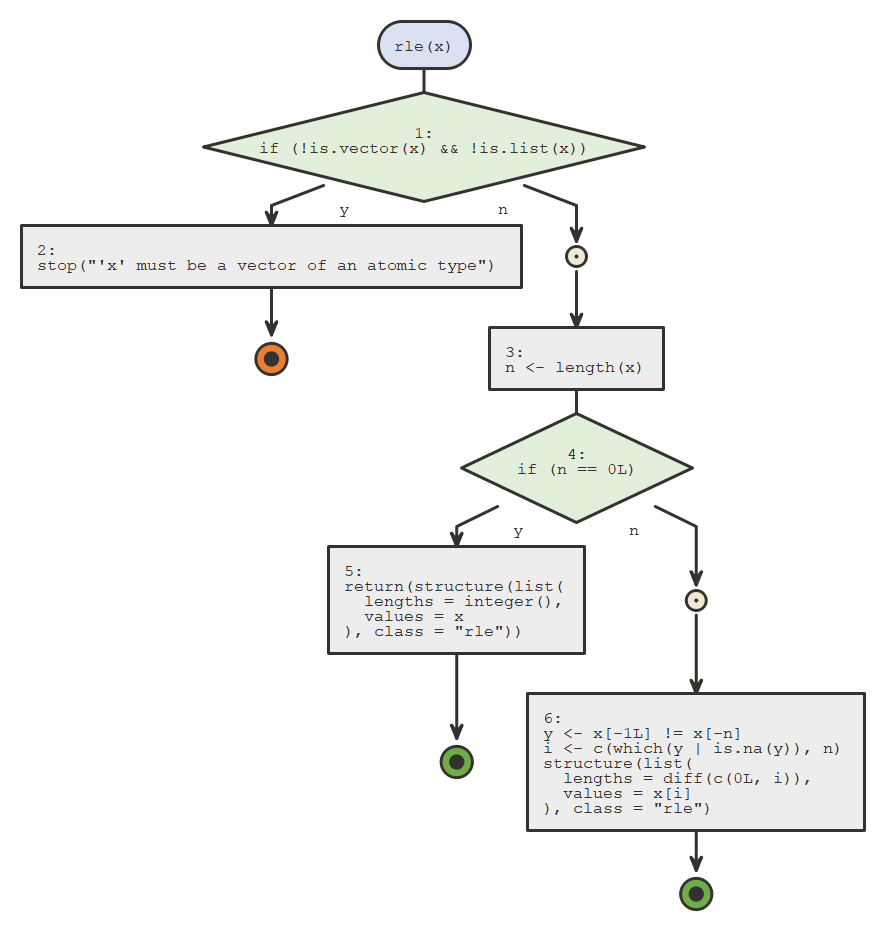
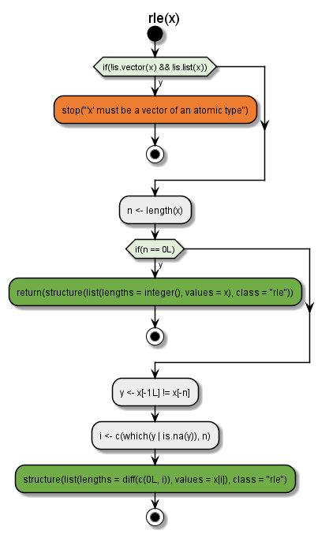

{flow} provides tools to visualize as flow diagrams the logic of functions, expressions or scripts and ease debugging.
Use cases are :
- Deciphering other people’s code
- Getting more comfortable with our own code by easing a visual understanding of its structure
- Documentation
- Debugging
- Inspect unit test results
- Providing a higher level view of an algorithm to collaborators
- Education
Installation
Install from CRAN with:
install.packages("flow")Or install development version from github:
remotes::install_github("moodymudskipper/flow")Example
Using default nomnoml engine
flow_view(rle)

nomnoml
Using plantuml engine (make sure the {plantuml} package is installed).
flow_view(rle, engine = "plantuml")

plantuml
Notes
Make sure to check the vignettes for a detailed breakdown of all features.
{flow} is built on top of Javier Luraschi’s {nomnoml} package, and Rainer M Krug ’s {plantuml} package, the latter only available from github at the moment.